| Lookup Calls and Lookup Services | ||
|---|---|---|
| ||
| Code Types | ||
In the previous chapter we have seen how to fill smartfields with an enumerated list of codes that were based on a code type. However, sometimes you need a smartfield (or listbox) with dynamically calculated entries that are based on the data in your database (e.g. a smartfield that allows selecting a person or company). This chapter shows how to accomplish this by implementing a so called Lookup Call and a corresponding Lookup Service. The lookup call is going to allow us to dynamically query companies from our database and provides the basis for a new Employer smartfield on the person search form.
Before we get to the interesting part we have to do some quick preliminary work. If you have not already done so in an earlier chapter, we first have to create a person search form. Go to the PersonTablePage, right-click and choose Create Search Form. The created search form contains a field for each column defined on the PersonTablePage.
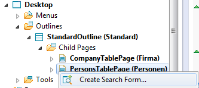
Use Person as the name and click Finish.
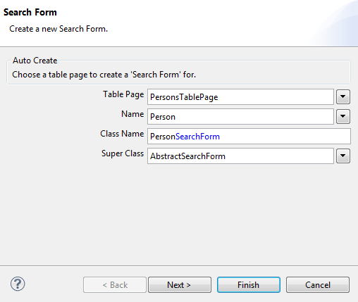
In the steps following later we want to add a company smartfield to the PersonSearchForm we just created. This field will present a filterable list of companies that allows users to easily find persons who are working for a specific company. In order to be able to do that we first have to create a new LookupCall:
Set the type name to CompanyLookupCall and also make sure to select the create new lookup service option as well as the AbstractSqlLookupService, then click Finish.

The new lookup call has now been created. Note that it is already configured to use an (also automatically created) lookup service. Note that we did not have to care about the creation and registration of the lookup service and its corresponding service interface, it has all been managed by the Scout SDK.
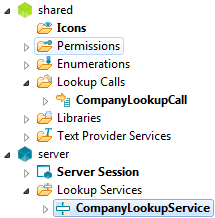
public class CompanyLookupCall extends LookupCall {
private static final long serialVersionUID = 1L;
@Override
protected Class<? extends ILookupService> getConfiguredService() {
return ICompanyLookupService.class;
}
}
Now it is time to implement the company lookup service. Double-click on the CompanyLookupService and use the following implementation:
public class CompanyLookupService extends AbstractSqlLookupService implements ICompanyLookupService {
@Override
public String getConfiguredSqlSelect() {
return "SELECT C.COMPANY_NR, " +
" C.NAME " +
"FROM COMPANY C " +
"WHERE 1=1 " +
"<key> AND C.COMPANY_NR = :key </key> " +
"<text> AND UPPER(C.NAME) LIKE UPPER(:text||'%') </text> " +
"<all> </all> ";
}
}
Looking at this implementation we see that for each company returned by our lookup service we provide both a (unique) key and a text, which is a general characteristic of lookup services. Further we see that parts of the SQL statement are enclosed in tags. This is because a lookup can be performed in several ways:
Depending on the way the lookup is performed, only one SQL part in tags is used. If for example a Text-Lookup is performed, only the SQL code in the corresponding <text> tag is used, whereas the SQL code in the other tags is ignored.
Our lookup call is now ready to be used. This is what we are going to do in the next section.
Next we are adding an additional Employer smartfield to the search dialog. This will allow users to find persons who are working for a specific company. The field is added to the search form as follows: right-click on the PersonSearchForm and pick New Form Field... from the menu.
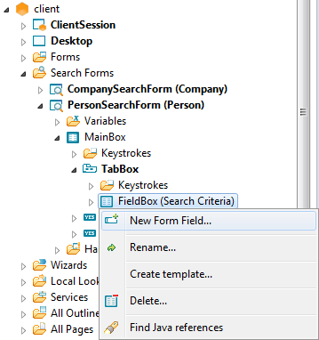
Then pick Smart Field from the list and click Next.
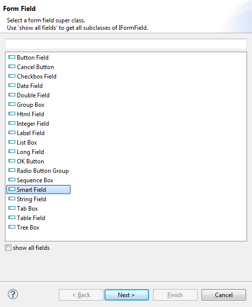
Set the name to Employer and set the lookup call to our newly created CompanyLookupCall, then click Finish.
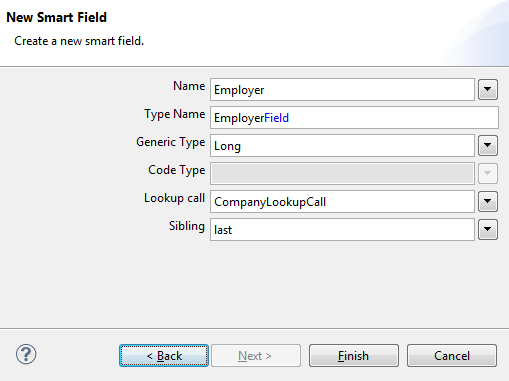
After restarting our server and client we can see a fully functional Employer smartfield in the person search form. When entering text into this smartfield, the system automatically filters the shown list of available companies.

Now there is only one piece missing here. Even though the Employer smartfield behaves as desired, the rows in the PersonTablePage are not yet filtered according to the search constraints when clicking on the search button. That is what we do in the next section.
In order to constrain the SQL statement for the person outline, we have to adapt the service operation getPersonTableData and add a parameter formData of the type PersonSearchFormData to the method. Do that for both the service interface IStandardOutlineService and the service implementation StandardOutlineService.
Interface:
public interface IStandardOutlineService extends IService {
public Object[][] getPersonTableData(PersonSearchFormData formData, Long companyNr) throws ProcessingException;
}
Implementation:
@Override
public Object[][] getPersonTableData(PersonSearchFormData formData, Long parentPageCompanyNr) throws ProcessingException {
StringBuilder statement = new StringBuilder();
statement.append("SELECT PERSON_NR, LAST_NAME, FIRST_NAME FROM PERSON WHERE 1=1 ");
if (parentPageCompanyNr != null) {
statement.append("AND COMPANY_NR = :parentPageCompanyNr ");
}
if (!StringUtility.isNullOrEmpty(formData.getFirstname().getValue())) {
statement.append("AND UPPER(FIRST_NAME) LIKE UPPER(:firstname || '%') ");
}
if (!StringUtility.isNullOrEmpty(formData.getLastname().getValue())) {
statement.append("AND UPPER(LAST_NAME) LIKE UPPER(:lastname || '%') ");
}
if (formData.getEmployer().getValue() != null) {
statement.append("AND COMPANY_NR = :employer ");
}
return SQL.select(statement.toString(), new NVPair("parentPageCompanyNr", parentPageCompanyNr), formData);
}
Note that we have relied once again on the naming convention: We are referencing the value of the Employer form field by using an identically named :employer bind variable.
Now we need to forward the PersonSearchFormData to the server. Return to the method execLoadTableData in the PersonTablePage and add a new parameter to the service call according to its interface definition. The required PersonSearchFormData is available from the filter parameter:
@Override
protected Object[][] execLoadTableData(SearchFilter filter) throws ProcessingException {
return SERVICES.getService(IStandardOutlineService.class).getPersonTableData((PersonSearchFormData) filter.getFormData(), getCompanyNr());
}
After restarting both server and client the Employer smartfield is fully functional and ready to be used.

So far our Employer smartfield has been independent of any other fields in the search form. In this section we are going to change this and add an additional Employer Type smartfield to the person search form. This smartfield will allow us to search for persons working for a specific type of company (e.g. only persons working for Supplier companies). Then of course the two employer smartfields should also be linked. If we have for example set the Employer Type field to Supplier, then the Employer smartfield should only list suppliers but no customers.
Let us start by adding the new Employer Type smartfield to the person search form:
When creating the field use the following options:
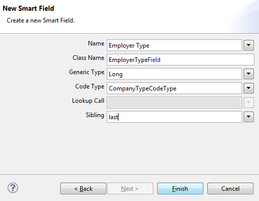
One way to pass on the information from the Employer Type to the Employer smartfield is by setting the master field accordingly: Click on the Employer field in the Scout Explorer view. Then change the Master Field property to Employer Type.
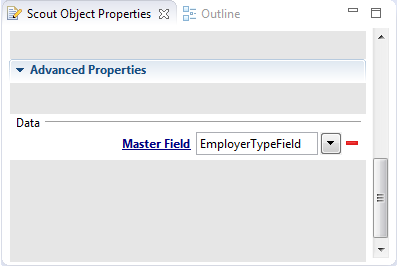
We can now adapt the CompanyLookupService quite easily. Scout automatically provides a :master bind variable that contains the value of the master field. We can make use of this variable as follows:
public class CompanyLookupService extends AbstractSqlLookupService implements ICompanyLookupService {
@Override
public String getConfiguredSqlSelect() {
return "SELECT C.COMPANY_NR, " +
" C.NAME " +
"FROM COMPANY C " +
"WHERE 1=1 " +
" AND (C.TYPE_UID = :master OR :master IS NULL) " +
"<key> AND C.COMPANY_NR = :key </key> " +
"<text> AND UPPER(C.NAME) LIKE UPPER(:text||'%') </text> " +
"<all> </all> ";
}
}
Our outline service method responsible for selecting persons needs an update as well:
public class StandardOutlineService extends AbstractService implements IStandardOutlineService {
@Override
public Object[][] getPersonTableData(PersonSearchFormData formData, Long parentPageCompanyNr) throws ProcessingException {
StringBuilder statement = new StringBuilder();
statement.append("SELECT PERSON_NR, LAST_NAME, FIRST_NAME FROM PERSON WHERE 1=1 ");
if (parentPageCompanyNr != null) {
statement.append("AND COMPANY_NR = :parentPageCompanyNr ");
}
if (!StringUtility.isNullOrEmpty(formData.getFirstname().getValue())) {
statement.append("AND UPPER(FIRST_NAME) LIKE UPPER(:firstname || '%') ");
}
if (!StringUtility.isNullOrEmpty(formData.getLastname().getValue())) {
statement.append("AND UPPER(LAST_NAME) LIKE UPPER(:lastname || '%') ");
}
if (formData.getEmployer().getValue() != null) {
statement.append("AND COMPANY_NR = :employer ");
}
else if (formData.getEmployerType().getValue() != null) {
statement.append("AND COMPANY_NR IN (SELECT COMPANY_NR FROM COMPANY WHERE TYPE_UID = :employerType) ");
}
return SQL.select(statement.toString(), new NVPair("parentPageCompanyNr", parentPageCompanyNr), formData);
}
}
After restarting server and client our new person search form should work like a charm!

The PersonSearchForm is now working very well for our top-level PersonTablePage. But how about other places? When navigating to the PersonTablePage below a specific company the Employer (and Employer Type) field in the PersonSearchForm does not make much sense, because all listed persons are belonging to the same company anyway. One way to resolve this would be to hide the Employer field in the PersonSearchForm in such a case. Another, probably more transparent solution, is to disable the Employer field and to fill it with the corresponding company. Let us implement the second solution.
First create a CompanyNr variable of type Long for the PersonSearchForm:
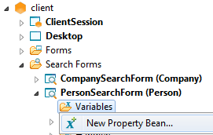
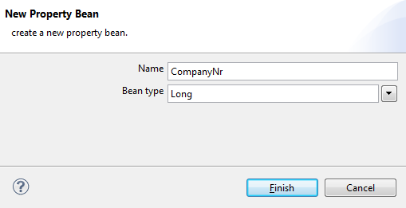
Now we have to adapt the SearchHandler of the PersonSearchForm, so that the Employer field gets disabled and prefilled if the search form is used in the context of a specific company:
public class SearchHandler extends AbstractFormHandler {
@Override
public void execLoad() {
if (m_companyNr != null) {
getEmployerField().setValue(m_companyNr);
getEmployerField().setEnabled(false);
getEmployerTypeField().setVisible(false);
}
}
}
Then we also have to pass on the CompanyNr variable from the PersonTablePage to the corresponding search form. In the PersonTablePage we implement the Exec Init Search Form method as follows:
@Override
protected void execInitSearchForm() throws ProcessingException {
((PersonSearchForm) getSearchFormInternal()).setCompanyNr(m_companyNr);
}
If you have navigated to the persons below a company, the search form should now look as below. Note that the Employer field is now disabled and prefilled with the correct company:
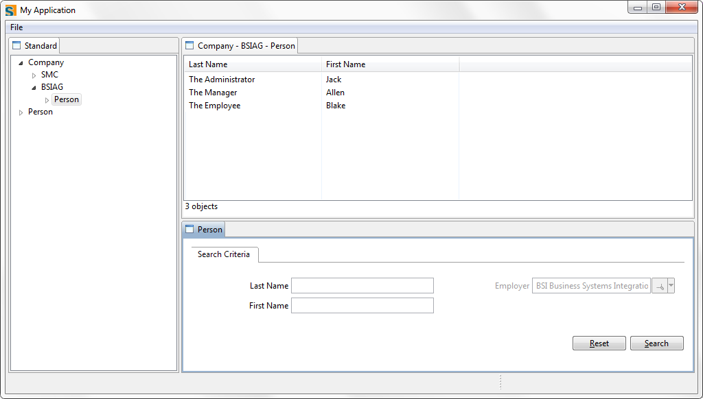
Parameterizing the PersonSearchForm with the CompanyNr allows us to do some refactoring. Let us throw out some old code!
The companyNr argument is not needed anymore in our outline service, since this information is already included in the PersonSearchFormData. The corresponding implementation gets simpler as well:
public interface IStandardOutlineService extends IService {
public Object[][] getPersonTableData(PersonSearchFormData formData) throws ProcessingException;
}
public class StandardOutlineService extends AbstractService implements IStandardOutlineService {
@Override
public Object[][] getPersonTableData(PersonSearchFormData formData) throws ProcessingException {
StringBuilder statement = new StringBuilder();
statement.append("SELECT PERSON_NR, LAST_NAME, FIRST_NAME FROM PERSON WHERE 1=1 ");
if (!StringUtility.isNullOrEmpty(formData.getFirstname().getValue())) {
statement.append("AND UPPER(FIRST_NAME) LIKE UPPER(:firstname || '%') ");
}
if (!StringUtility.isNullOrEmpty(formData.getLastname().getValue())) {
statement.append("AND UPPER(LAST_NAME) LIKE UPPER(:lastname || '%') ");
}
if (formData.getEmployer().getValue() != null) {
statement.append("AND COMPANY_NR = :employer ");
}
else if (formData.getEmployerType().getValue() != null) {
statement.append("AND COMPANY_NR IN (SELECT COMPANY_NR FROM COMPANY WHERE TYPE_UID = :employerType) ");
}
return SQL.select(statement.toString(), formData);
}
}
In a last step we also remove the companyNr argument in our execLoadTableData(..) implementation of the PersonTablePage.
@Override
protected Object[][] execLoadTableData(SearchFilter filter) throws ProcessingException {
return SERVICES.getService(IStandardOutlineService.class).getPersonTableData((PersonSearchFormData) filter.getFormData());
}
...and there we are!
Let us quickly sum up what we have done in this chapter:
|  | |
| Code Types |